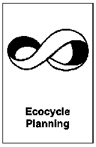
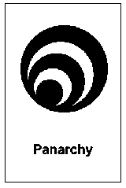
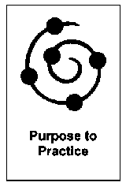

Critical Uncertainties: pianificare scenari futuri
Esplora scenari futuri partendo dalle incertezze che non puoi controllare.
Half-day o sessioni lunghe.
4 strutture
Esplora scenari futuri partendo dalle incertezze che non puoi controllare.

Ecocycle Planning è una Liberating Structure che mappa progetti e attività sul ciclo di vita Ecocycle: nascita, maturità...

Panarchy è una Liberating Structure che mappa come un'innovazione o un cambiamento si muove tra livelli di sistema: micro (persone e...

Purpose to Practice (P2P) è una Liberating Structure che allinea gli stakeholder su cinque elementi di un'iniziativa: Purpose (scopo)...
Ecocycle Planning, Open Space parziale, Conversation Cafe esteso e altre in questo catalogo durano fino a 4 ore. Pianifica pause e materiali in anticipo.
Apri con una struttura breve per scaldare il gruppo, poi la struttura estesa principale, chiudi con What So What Now What? o 15% Solutions per i prossimi passi.